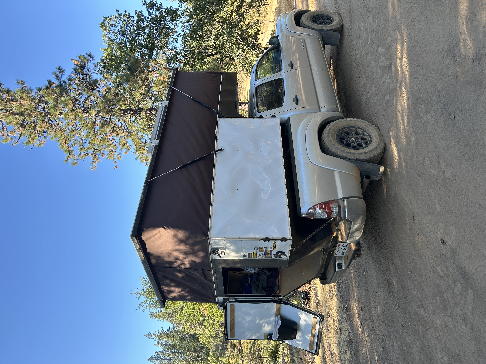
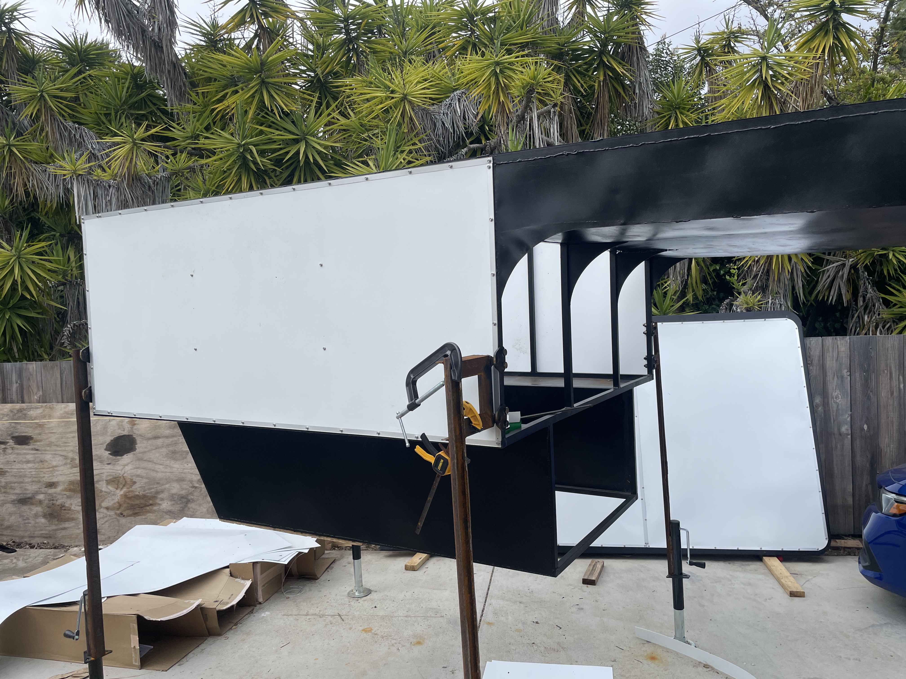
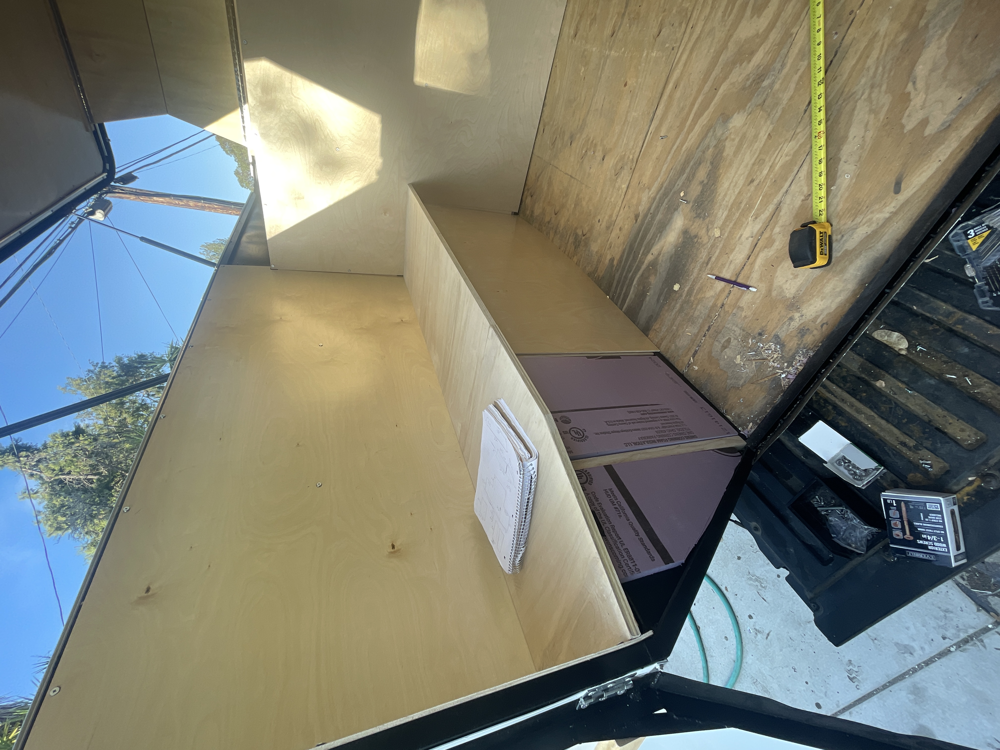
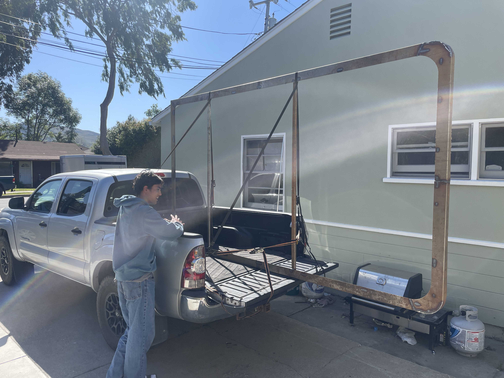
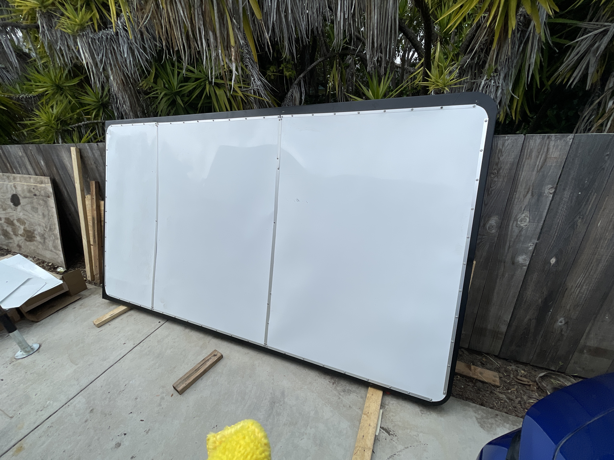
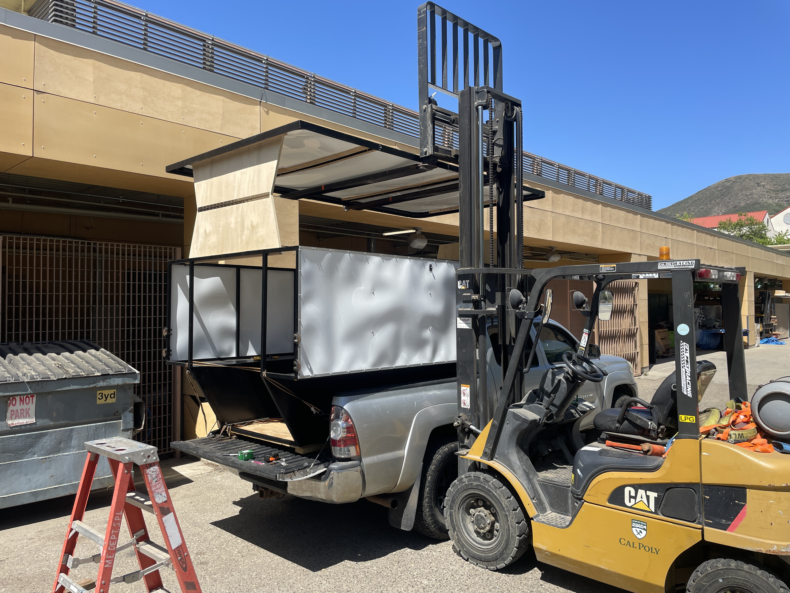
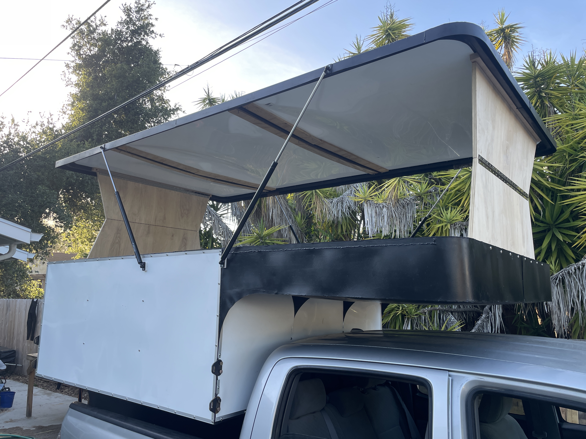
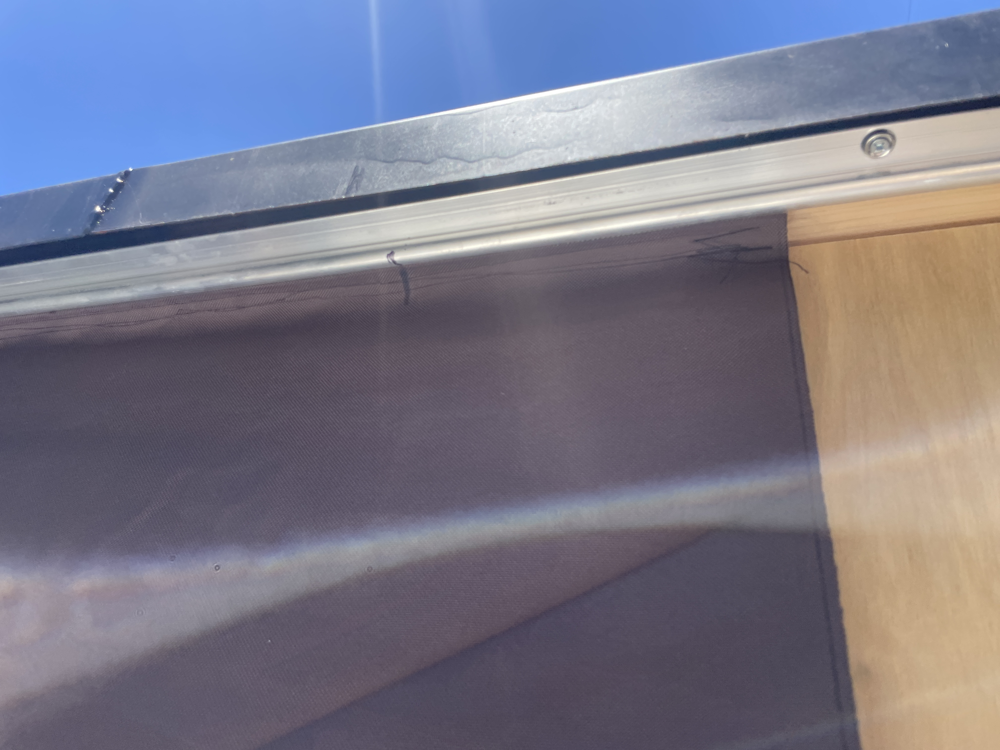
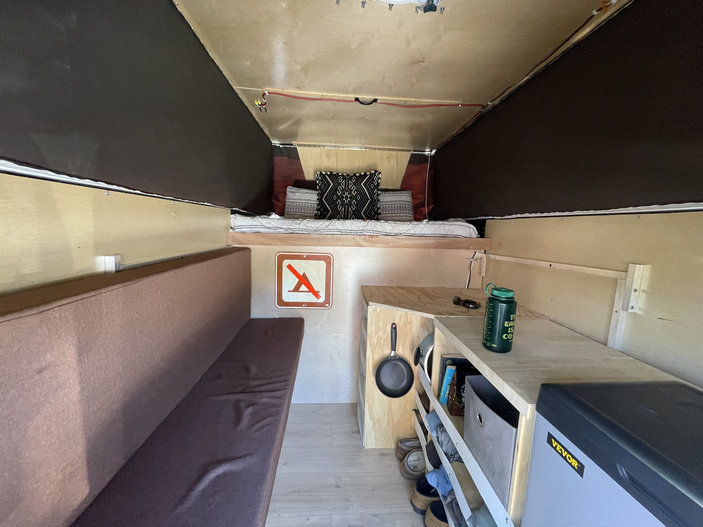
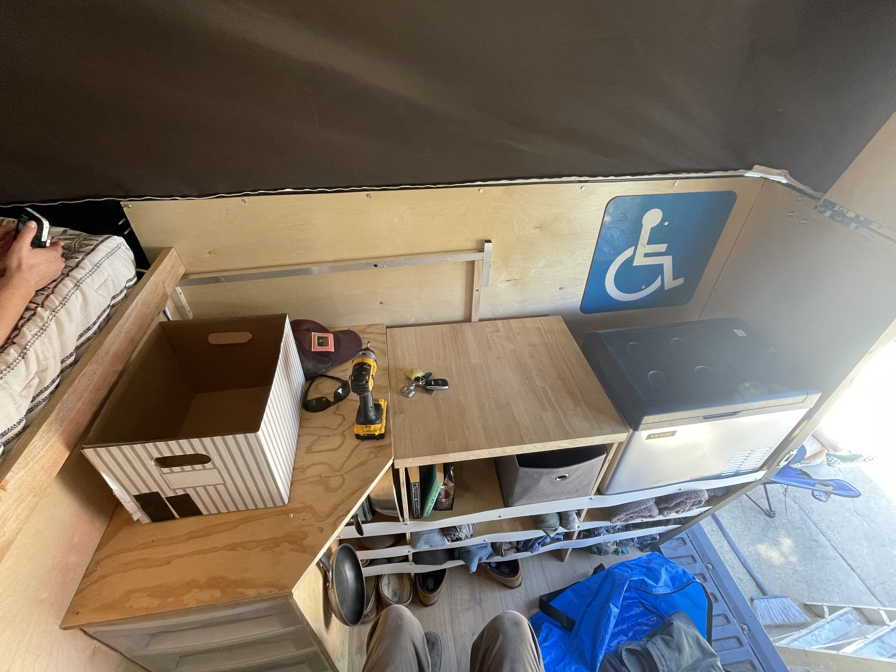

Custom Pop-up Truck Camper
Overview
I built a custom camper as my personal capstone project, drawing on past experiences and ideas I had seen and tested. My goal was to design a camper that fit my needs and preferences, using the knowledge from my classes and hands-on experience. The build incorporated nearly all the skills I’ve developed over years of working on mechanical projects.
Purpose
I had previously lived in my truck for a couple of months during a summer and loved the experience. I used a rooftop tent for sleeping and stored my belongings in the truck bed or cab. While this setup worked well in good weather, it had many shortcomings for long-term use.
The biggest issue was the lack of a kitchen. With only a cooler and a stove that had to be set up on the tailgate each time, I often ate poorly or spent more money eating out than I wanted to on a tight budget.
The nightly tent setup was also inconvenient. I had to unzip and fold out the tent and gather all the sleeping items from the cab. In wet weather, the tent itself stayed dry, but the gear stored in the bed was not well protected. Packing away a wet tent also caused mold issues if it wasn’t dried before storage.
I decided to build a custom camper from scratch for several reasons:
- I wanted to create something I was proud of while I still had access to fabrication tools, advice, and skilled peers.
- I didn’t have the budget for a prebuilt camper.
- My current truck, with its 5-ft bed and limited payload, had very few camper options available.
- I wanted the camper to remain useful even after upgrading to a larger truck.
- By making it myself, I could include only the features I needed, saving weight and cost.
With all these considerations, I chose to build a slide-in pop-up truck camper. It needed to be small and lightweight to fit my current truck and maintain good fuel economy. The pop-up design would keep it low-profile while still being easy to deploy each night. I also made the dimensions universal so it would fit in any truck bed. Finally, I included a fridge for storing food and prescriptions, which required a solar panel and battery, with generator power reserved as backup.
Frame
I chose steel frame construction over composite or aluminum because it was easier and cheaper to fabricate with the tools and workspace I had available.

I used 16-gauge square tubing and sheet metal to construct the outer skeleton and cab-over bed section. The sheet metal was water-jet cut for accuracy, and all tubing and components were MIG welded into a cohesive structure. I painted the frame to prevent corrosion while still allowing for later modifications.
For cladding, I decided to use thin HDPE sheets which provided a cheap and lightweight solution that’s exceptionally waterproof and UV resistant. I selected ¼” plywood for the interior walls as it was lightweight and easy to mount interior features to. I used 1” EPS foam in between the inner and outer walls, similar to a house, to provide insulation.
 Roof
For the roof, I built a steel outer frame to provide rigidity and a rain overhang. The perimeter combined tubing and water-jet cut sheet metal, all welded together.
My initial plan was to clad the roof in multiple sheets of HDPE, but difficulties sealing the joints convinced me it wouldn’t be reliably watertight.
Fiberglass
After exploring options, I decided the cheapest and most practical cladding method was fiberglass. The roof is built with a ¼-in plywood interior layer, a ½-in EPS foam insulation layer, and four layers of fiberglass for weather protection. With the help of a friend, I laid all the fiberglass in a single afternoon. Finished in primer and paint for UV protection that is repairable if needed in the future.
Pop-Up

I chose a pop-up roof primarily for fuel economy. The added complexity was worth the reduced drag. Another major factor was interior height: most prebuilt campers are barely over 6 ft tall, but at 6’6” I wanted enough clearance to stand upright comfortably.
Mechanism
I considered many lifting mechanisms, aiming for easy deployment and maximum headroom. I ultimately chose a proven camper design: hinges at the front and back for rigidity, with four gas struts to assist in lifting and holding the roof up.
Canvas
Sewing the canvas was a daunting part of the project. My only prior experience was basic mending, but after about 216 feet of stitching I produced a result I was happy with. I used keder cord to slide the fabric edges into aluminum extrusions, securing the canvas to the frame and roof. This created a flexible but sealed barrier when the roof is deployed.
Interior
Throughout the build, I carefully planned the interior layout. My main goals were to integrate a refrigerator and stove for convenient cooking, create a large bed with minimal setup, and maximize the remaining space for storage.
Electronics
The electrical system centers on a 240W solar panel mounted on the roof. An MPPT solar charge controller charges a 12V 100Ah LiPo battery, sized for my expected usage. The 12V fridge can be sustained by solar power, while an inverter provides AC power for small electronics and lighting. The inverter also functions as an AC-DC charger, allowing the battery to be recharged from shore power or a generator.
Bed
To accommodate my height, I designed the bed around a full-size mattress with an extra foot of length. I built a slat system that stows away when not in use, maximizing living space. The cab-over section holds a 4-ft mattress thick enough to store all bedding and pillows even when collapsed. The slat extension uses 1.5-ft mattress sections that double as bench cushions when not part of the bed.